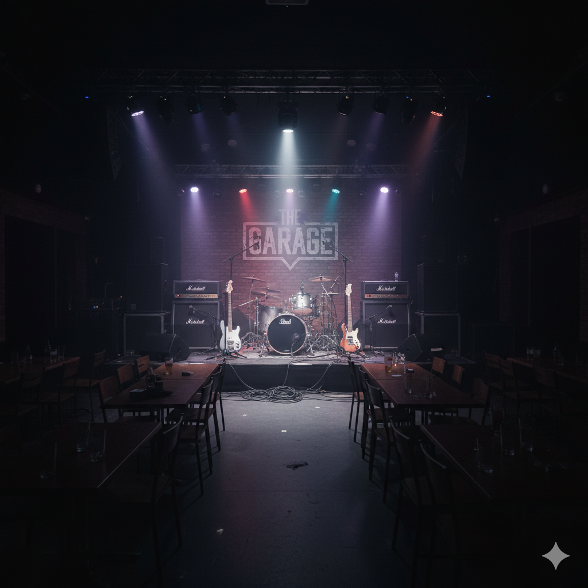

Get Your Groove On, Austin! Your Live Music Guide for Thursday, Sept 18th
Austin, the live music capital of the world, is buzzing with energy tonight. Whether you're into heavy metal, country, funk, or indie folk, there's a stage waiting for you. Here’s a rundown of the can't-miss shows happening around town.
The Main Event: RippleFest Texas at The Far Out Lounge
If you're looking for the epicenter of Austin's music scene tonight, look no further than RippleFest Texas. Taking over The Far Out Lounge & Stage, this festival is a sonic explosion of heavy rock and metal. The lineup is stacked with genre titans like Weedeater, Whores, Mothership, ASG, and Mondo Generator. It's a full day of powerful riffs and high energy that promises to be an unforgettable experience.
Big Shows on Big Stages
For those who prefer arena-sized performances, country superstar Lainey Wilson is bringing her 'Whirlwind World Tour' to the Moody Center. Expect a night of chart-topping hits and incredible showmanship. Meanwhile, funk and soul fans can get down at the Empire Control Room with a performance by Full Crate, or catch the smooth lyrical stylings of Kota the Friend at The Mohawk-Austin.
Tributes, Tributes, Tributes!
Feeling a bit nostalgic? Antone's Nightclub has you covered with the Red Not Chili Peppers, a tribute to the legendary funk-rock band. They'll be supported by Firecracker Smile, a Stone Temple Pilots tribute act, making for a full night of 90s rock excellence. It's the perfect chance to sing along to all your favorite hits.
From Soulful Blues to Metal Mayhem
The variety doesn't stop there. Here's a quick list of other amazing shows you won't want to miss:
- For the Headbangers: Head to Valhalla for a night of thrash with SadisticForce and Invocation Spells.
- Indie and Eclectic: Cheer Up Charlies hosts an intriguing lineup with Lefty, Justine, and Haunt Me.
- Powerhouse Vocals: Witness a masterclass in blues and soul at Regal Rooms with the trio of Carolyn Wonderland, Shelley King, and Ginger Leigh.
- An Evening at The Continental Club: The legendary venue features two great sets. Catch the early show with Casper Rawls, and stick around for the late-night groove of Barfield, The Tyrant.
- Soulful Grooves: The genre-bending Mike Dillon Band will be lighting up the Sahara Lounge.
No matter what your musical taste, Austin has something to offer tonight. Get out there and support live music!